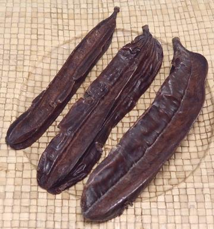
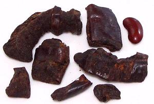

Aridan / Prekese

[Aiden; Prekese (Tiwa, Ghana (Soup Perfume)); Uhio, Uhiokrihio (Igbo);
Uyayak, Tyko, Yanghanyanghan (Nigeria); Fruit des 4 Cote (French);
Galbanam; Effu; Oshosho; Tetrapleura tetraptera]
This medium size bean tree is most grown in Ghana, but also east to
Nigeria. It produces large winged bean pods up to nearly 10 inches long.
They contain a sweet aromatic pulp used to flavor Nigerian Pepper Soup,
Banga Soup, Palm Fruit Soup and others.
These pods have four lengthwise "wings". Two of those wings are
woody and the other two are filled with an aromatic pulp, which is
used in soups and stews, but not a lot of it.
More on Beans, Peas and Lentils.

Buying:
Whole pods, dried fruit pulp, and dried and ground
fruit are available on-line from a few sites that carry a wide variety
of West African products. The photo specimens to the left were purchased
for 2018 US $3.50 per ounce. The whole pods pictured above were bought for
2022 US $0.98 per ounce. I recommend buying paste, as there isn't a lot in
the pods and it's not easy to get it out. The ground is used for teas, but
can't be used in recipes as in includes shell.
Prep:
This pulp sold in chunks, as in the photo, is
somewhat fibrous, so you may want to grind it or soak it and press it
through a strainer as you would Tamarind. Do the same with pulp from
whole pods.
Subst:
This pulp tastes much like Dried Dates with
perhaps a touch of Tamarind. If using dates, I'd avoid Majools, which
are too sweet.
bp_aridanz 180719 - www.clovegarden.com
©Andrew Grygus - agryg@clovegaden.com - Photos on this
page not otherwise credited are © cg1 -
Linking to and non-commercial use of this page permitted.